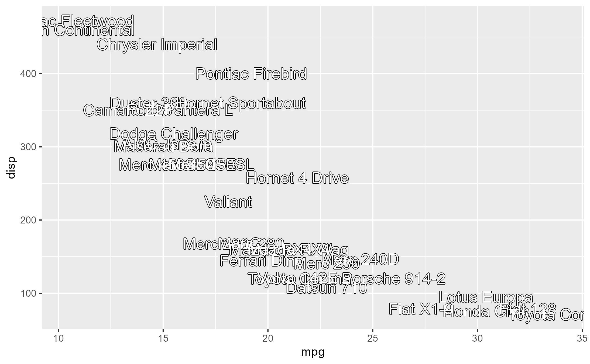
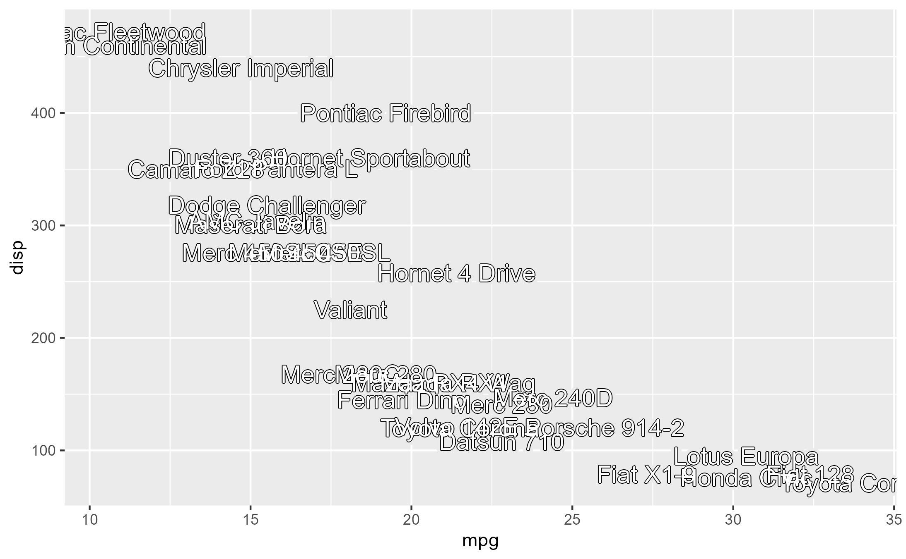

Mimicking SVG-style "stroke" styles, this function uses 1-2 ggfx::with_outer_glow filters
to create outlines around text. There are two layers for the following uses: the first layer is designed to
create a visible outline that places emphasis on the text. The second layer is designed to add
a mask around the outlined text that makes it stand out from the background.
Arguments
- ...
Passed to the geom layer as specified in the
geomargument.- geom
Which geom layer to apply outlines over. Defaults to
- inner_params
Passed to the first
ggfx::with_outer_glowfilter (inner outline).- outer_params
Passed to the second
ggfx::with_outer_glowfilter (outer outline).- use_outer
Whether the outer outline should be turned on. Defaults to
FALSE.
Details
This is particularly useful for labels drawn over panels with grid lines and a non-white background color. Outlines will create a stronger perceptual contrast for the labels.
Examples
# \dontrun{
library(ggplot2)
p <- ggplot(mtcars, aes(mpg, disp, label = rownames(mtcars)))
# By default creates a white outline
p + geom_text_outline() +
theme_pgl_minimal()
 # You can also add a second, outer outline with `use_outer = TRUE`
# This is useful if the plot has a background color like in the default theme
p + geom_text_outline(use_outer = TRUE)
# This outer outline is more obvious against a white background
p + geom_text_outline(use_outer = TRUE) +
theme_void()
# You can also add a second, outer outline with `use_outer = TRUE`
# This is useful if the plot has a background color like in the default theme
p + geom_text_outline(use_outer = TRUE)
# This outer outline is more obvious against a white background
p + geom_text_outline(use_outer = TRUE) +
theme_void()
 # You can stylize the inner and outer outlines with
# arguments passed to `ggfx::with_outer_glow()`.
# The most relevant are `expand` and `colour`
p +
geom_text_outline(
inner_params = list(expand = 8),
outer_params = list(colour = "red"),
use_outer = TRUE
) +
theme_void()
# You can stylize the inner and outer outlines with
# arguments passed to `ggfx::with_outer_glow()`.
# The most relevant are `expand` and `colour`
p +
geom_text_outline(
inner_params = list(expand = 8),
outer_params = list(colour = "red"),
use_outer = TRUE
) +
theme_void()
 # You can pass arguments to the layer specified in the `geom` argument in the `...`.
# The default geom is `geom_text`, so you can pass arguments specific to it
p +
geom_text_outline(
vjust = "inward",
hjust = "inward",
check_overlap = TRUE,
use_outer = TRUE,
angle = 30
)
# You can also invert the text outlines
p +
geom_text_outline(
size = 5,
color = "white",
inner_params = list(colour = "black", expand = 1.5),
use_outer = TRUE
)

# You can pass other geoms to the `geom` argument (doesn't necessarily have to be a text layer)
library(ggrepel)
p + geom_text_outline(geom = geom_text_repel)
# }
# You can pass arguments to the layer specified in the `geom` argument in the `...`.
# The default geom is `geom_text`, so you can pass arguments specific to it
p +
geom_text_outline(
vjust = "inward",
hjust = "inward",
check_overlap = TRUE,
use_outer = TRUE,
angle = 30
)
# You can also invert the text outlines
p +
geom_text_outline(
size = 5,
color = "white",
inner_params = list(colour = "black", expand = 1.5),
use_outer = TRUE
)

# You can pass other geoms to the `geom` argument (doesn't necessarily have to be a text layer)
library(ggrepel)
p + geom_text_outline(geom = geom_text_repel)
# }